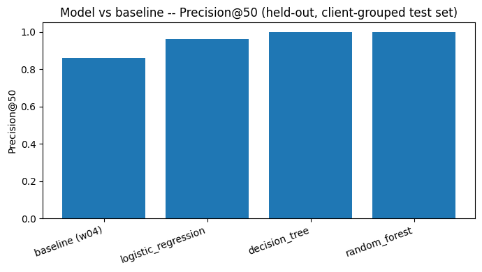

A client-grouped, honest-feature approach — and why a perfect score is a warning sign
Une même requête de recherche split parfois son trafic entre plusieurs pages d'un même
client (cannibalisation), au lieu de se concentrer sur une seule page forte. Nous avons
construit un détecteur honnête (features jamais dérivées du label) sur 1 129 695
paires (client, query) issues de 43 clients, évalué sous un split groupé par client
(32 clients en train, 11 en test, zéro chevauchement) contre une heuristique simple
(volume × nombre de pages concurrentes). Le decision tree et le random forest atteignent
un Precision@50 = 1.00 et un AUC = 0.987, contre AUC = 0.940 et
Precision@50 = 0.86 pour la baseline. Cette quasi-perfection s'explique surtout par
une seule feature dominante (competing_content_count, 91% de l'importance),
proche mécaniquement de la définition du label — ce résultat doit donc être lu comme un
raffinement modeste de la règle simple, pas une preuve de signal indépendant.
Recommandation principale : garder competing_content_count + volume comme
premier filtre de priorisation, en traitant le score modèle comme aide à la décision.
Quand plusieurs pages d'un même client se disputent la même requête de recherche, le trafic se fragmente au lieu de se concentrer sur une page forte. Une équipe contenu doit savoir quelles requêtes prioriser pour merger, rediriger ou consolider — traiter toutes les requêtes candidates coûte trop de temps humain.
Ce travail construit un détecteur honnête de cannibalisation et compare son classement à une heuristique simple (volume × nombre de pages concurrentes), pour établir si un modèle appris apporte une vraie valeur de priorisation au-delà de la règle simple.
FlyRank/internship-warehouse (Hugging Face, accès géré par token, lecture seule).fact_content_query_90d (fenêtre glissante 90 jours) jointe à
fact_content_daily_performance (mois 2026-03) pour ne garder que le contenu actif en mars.Échantillon final : 1 129 695 paires (client, query) réparties sur 43 clients.
Taux de base exact de cannibalisation — à coller depuis la sortie de capstone.ipynb (cellule Data), pas disponible dans le run w05.
is_cannibalized = top_content_impression_share < 0.70
au niveau (client, query).top_content_impression_share.GroupShuffleSplit sur client_hash_id (test_size=0.25,
random_state=42) : aucun client partagé entre train et test, vérifié explicitement.Split : 708 647 lignes / 32 clients en train, 421 048 lignes / 11 clients en test, zéro client partagé. Les 3 modèles appris dépassent la baseline sur les deux métriques ; decision_tree et random_forest sont ex-aequo sur Precision@50 (0 faux positif dans leur top-50) — voir Limitations pour pourquoi ce chiffre est à lire avec prudence plutôt que comme une victoire nette.
| Modèle | AUC | Precision@50 |
|---|---|---|
| baseline (w04) | 0.940 | 0.86 |
| logistic_regression | 0.977 | 0.96 |
| decision_tree | 0.987 | 1.00 |
| random_forest | 0.987 | 1.00 |

feature_importances_ montre que 91.2% du pouvoir prédictif du
decision_tree vient d'une seule feature, competing_content_count (8.6% pour
le volume, le reste proche de zéro). Or cette feature est presque mécaniquement liée à la
définition du label (is_cannibalized = top_content_impression_share < 0.70) :
avec une seule page active sur une query, le top share vaut toujours 1.0, donc jamais
cannibalisé. Le modèle apprend en grande partie une relation quasi-déterministe du label
plutôt qu'un signal indépendant riche.competing_content_count=2 — le decision tree les regroupe dans la même feuille
et ne distingue pas entre eux malgré des top_content_impression_share très
différents (0.50 à 0.68).0.70 pour définir is_cannibalized est une convention,
pas une vérité terrain — un autre seuil déplacerait le taux de base et les métriques.competing_content_count >= 2 et un volume au-dessus de la
médiane : ces deux features portent l'essentiel du pouvoir prédictif observé, un score de
modèle plus complexe n'ajoute que peu ici.competing_content_count faible (2-3) et score moyen (~0.2-0.5) sont mal
discriminées par le decision tree actuel (feuilles trop grossières) : les envoyer en revue
manuelle plutôt qu'en décision automatique.work/notebooks/w03_data_contract.ipynb, w04_baseline_score.ipynb,
w04_signal_audit.ipynb, w05_model.ipynb, capstone.ipynb.FlyRank/internship-warehouse sur Hugging Face (accès géré, token lecture seule).random_state=42 partout pour reproductibilité exacte.